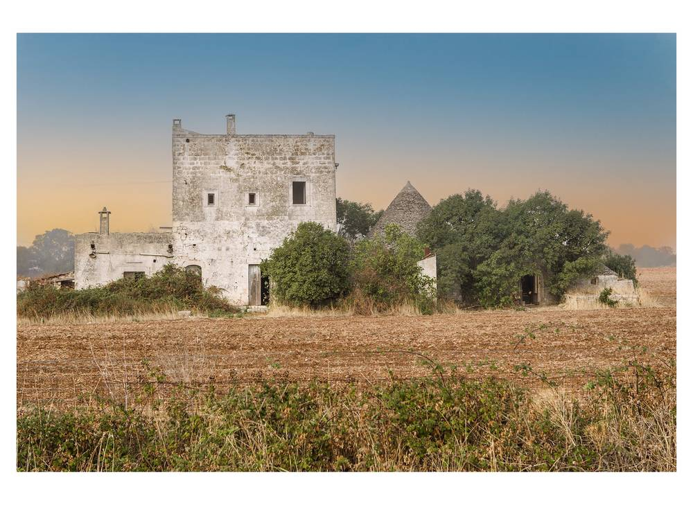

이탈리아 바리 광역시권 첫 재생에너지공동체 '체르 노바' 출범…광역시는 학교 건물 전기 소비로 참여

광역시장·지오이아델콜레 시장이 설립 증서 서명, 시민·중소기업·제3섹터 단체도 창립 회원으로
이탈리아 남부 바리 광역시권에서 첫 재생에너지공동체가 지오이아델콜레(Gioia del Colle)에 문을 열었다. 비토 레체세(Vito Leccese) 바리 광역시장과 조반니 마스트란젤로(Giovanni Mastrangelo) 지오이아델콜레 시장은 10일 시청 의회장에서 '재생에너지공동체 노바 지오이아델콜레'(CER Nova Gioia del Colle) 비영리 협회의 설립 증서와 정관에 서명했다. 시민과 중소기업, 제3섹터 단체도 창립 회원으로 함께했다. 바리 광역시는 창립 회원이자 소비자로 참여해, 지오이아델콜레 카누도 고등학교(IISS Canudo)가 쓰는 학교 건물의 전기 소비를 재생에너지 전기를 가상으로 나누는 체계에 올린다. 회원은 공동체가 나눈 전기로 요금과 경제 면에서 직접 혜택을 얻고, 그 혜택은 회원과 지역을 위한 사회적 재사용 사업과 에너지 빈곤 대응에 쓸 수 있다. 레체세 시장은 "에너지공동체를 만든다는 것은 설비를 설치하고 킬로와트시를 생산하는 데 그치지 않는다"고 말했고, 마스트란젤로 시장은 에너지 비용 절감과 이산화탄소 배출 감소를 대표 효과로 꼽았다.
시민에너지 관점
바리 광역시권의 첫 에너지공동체는 학교 한 곳의 전기 소비에서 출발했지만, 광역시와 기초지자체, 시민, 중소기업, 제3섹터 단체가 처음부터 같은 협회의 창립 회원으로 앉았다는 점이 중요하다. 공공이 앞장선 사업이라 시민 몫이 작지 않느냐는 걱정이 있으나, 혜택을 에너지 빈곤 대응과 지역 사회 사업으로 돌리도록 설계해 이익이 공동체 안에 남게 했다. 공공이 길을 열고 시민이 회원으로서 소유와 운영에 참여하는 구조가 지역 소유로 가는 가장 현실적인 길이다. 한국의 광역·기초지자체도 학교와 공공건물의 전기 소비를 시민 에너지공동체에 열어 주고, 시민과 지역 사업자를 창립 회원으로 맞아 주기 바란다.
출처: BariToday 2026-11-10 Giorgio Puzzovio 원문 보기
イタリア・バーリ都市圏初の再生可能エネルギー共同体「チェル・ノーヴァ」が発足…都市圏は学校施設の電力消費で参加
都市圏市長とジョイア・デル・コッレ市長が設立証書に署名、市民・中小企業・第三セクター団体も創設メンバーに
イタリア南部のバーリ都市圏で初の再生可能エネルギー共同体が、ジョイア・デル・コッレ(Gioia del Colle)に誕生した。ヴィト・レッチェーゼ(Vito Leccese)バーリ都市圏市長とジョヴァンニ・マストランジェロ(Giovanni Mastrangelo)ジョイア・デル・コッレ市長は10日、市庁舎の議場で、「再生可能エネルギー共同体ノーヴァ・ジョイア・デル・コッレ」(CER Nova Gioia del Colle)非営利協会の設立証書と定款に署名した。市民や中小企業、第三セクター団体も創設メンバーとして加わった。バーリ都市圏は創設メンバーかつ消費者として参加し、ジョイア・デル・コッレのカヌード高校(IISS Canudo)が使う校舎の電力消費を、再生可能エネルギーの電気を仮想的に分け合う仕組みに載せる。メンバーは共同体が分け合った電気で料金面・経済面の直接的な恩恵を受け、その恩恵はメンバーと地域のための社会的再利用事業やエネルギー貧困対策に充てられる。レッチェーゼ市長は「エネルギー共同体をつくることは、設備を設置して再生可能エネルギーでキロワット時を生み出すことだけではない」と述べ、マストランジェロ市長はエネルギーコストの削減と二酸化炭素排出の減少を代表的な効果に挙げた。
市民エネルギーの視点
バーリ都市圏初のエネルギー共同体は学校1校の電力消費から出発したが、都市圏と基礎自治体、市民、中小企業、第三セクター団体が最初から同じ協会の創設メンバーとして席に着いた点が重要だ。公共が先頭に立った事業なので市民の取り分が小さいのではという心配はあるが、恩恵をエネルギー貧困対策や地域社会事業に回すよう設計し、利益が共同体の中に残るようにした。公共が道を開き、市民がメンバーとして所有と運営に加わる構造が、地域所有へ向かう最も現実的な道だ。韓国の広域・基礎自治体も学校や公共施設の電力消費を市民エネルギー共同体に開き、市民と地域事業者を創設メンバーとして迎えてほしい。
出典: BariToday 2026-11-10 Giorgio Puzzovio 原文を読む
意大利巴里都市圈首个可再生能源社区“CER Nova”成立…都市圈以学校建筑用电参与
都市圈市长与焦亚德尔科莱市长签署设立文件，市民、中小企业和第三部门组织也是创始成员
意大利南部巴里都市圈首个可再生能源社区在焦亚德尔科莱（Gioia del Colle）成立。巴里都市圈市长维托·莱切塞（Vito Leccese）与焦亚德尔科莱市长乔瓦尼·马斯特兰杰洛（Giovanni Mastrangelo）10日在市政厅议事厅，签署了“可再生能源社区新焦亚德尔科莱”（CER Nova Gioia del Colle）非营利协会的设立文件和章程。市民、中小企业和第三部门组织也作为创始成员参加。巴里都市圈以创始成员兼消费者的身份参与，把焦亚德尔科莱卡努多高中（IISS Canudo）所用校舍的用电纳入可再生能源电力的虚拟共享体系。成员可通过社区共享的电力在电费和经济上直接受益，这些收益可用于造福成员和本地的社会再利用项目以及应对能源贫困。莱切塞市长说，“建设能源社区不仅仅是安装设备、生产可再生能源的千瓦时”，马斯特兰杰洛市长则把降低能源成本和减少二氧化碳排放列为主要效果。
市民能源视角
巴里都市圈首个能源社区虽然从一所学校的用电起步，但都市圈、基层政府、市民、中小企业和第三部门组织从一开始就作为同一协会的创始成员坐到了一起，这一点很重要。有人担心这是公共部门牵头的项目，市民份额会不会太小，但它把收益设计为用于应对能源贫困和本地社会项目，使利益留在社区之内。公共部门开路、市民以成员身份参与所有和运营的结构，是通向地方所有最现实的道路。希望韩国的广域和基层政府也把学校和公共建筑的用电向市民能源社区开放，并吸纳市民和本地企业作为创始成员。
来源: BariToday 2026-11-10 Giorgio Puzzovio 查看原文
First Renewable Energy Community in Italy's Bari Metropolitan Area, CER Nova, Is Founded, With the Metropolitan City Joining Through a School Building's Electricity Use
The metropolitan mayor and the mayor of Gioia del Colle signed the founding act, with citizens, small businesses and third-sector bodies as founding members
The first renewable energy community in the Bari metropolitan area of southern Italy has been founded in Gioia del Colle. On the 10th, Bari metropolitan mayor Vito Leccese and Gioia del Colle mayor Giovanni Mastrangelo signed the founding act and statutes of the non-profit association Renewable Energy Community Nova Gioia del Colle (CER Nova Gioia del Colle) in the town hall's council chamber. Citizens, small and medium-sized businesses and third-sector organisations joined as founding members. The Metropolitan City of Bari takes part as both a founding member and a consumer, putting the electricity use of the school building housing the IISS Canudo secondary school in Gioia del Colle into the system that virtually shares renewable power. Members get direct benefits on bills and economically from the energy the community shares, and those benefits can fund social reuse projects for members and the local area and help tackle energy poverty. Leccese said that building an energy community is not only about installing plants or producing kilowatt-hours from renewables, while Mastrangelo named lower energy costs and reduced carbon dioxide emissions as the main benefits.
Citizen Energy View
The first energy community in the Bari area started from the electricity use of a single school, but what matters is that the metropolitan city, the town, citizens, small businesses and third-sector bodies sat down from the outset as founding members of the same association. Some may worry that a publicly led project leaves citizens a small share, but it is designed to direct benefits to tackling energy poverty and local social projects, so the gains stay inside the community. A structure in which the public sector opens the way and citizens take part in ownership and operation as members is the most realistic path to local ownership. Korea's metropolitan and local governments should likewise open the electricity use of schools and public buildings to citizen energy communities and welcome citizens and local businesses as founding members.
Source: BariToday 2026-11-10 Giorgio Puzzovio Read the original